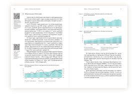
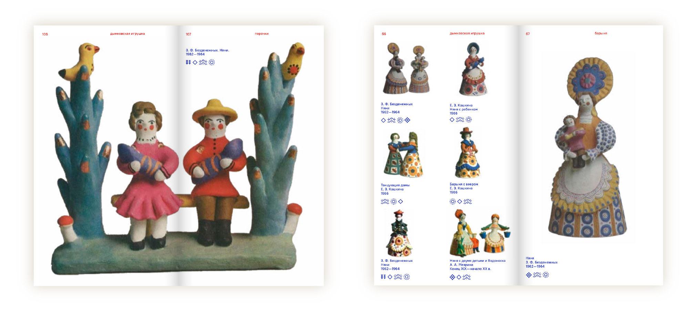

План работы
Не существует единого плана, как стоит дизайнить книгу, потому что творческий процесс сложно поймать в методику. Тем не менее, мы вывели этапы, на которые можно ориентироваться. Они помогут тебе понять объем работы и грамотно ее спланировать. Сначала ознакомимся с реальным кейсом, а потом обсудим каждый этап.
Пример из реальной работы
В одном коммерческом проекте1 перед автором стояла задача: сверстать книгу об инвестициях с множеством графиков. Графики были разные — от маленьких круговых диаграмм до больших таблиц размером в несколько страниц. Нужно было придумать макет, который позволил бы симпатично включать в сплошной текст все виды графиков, а также располагать qr-коды со ссылками на исследования рядом с выбранным участком текста.

←
1
Книга «Облигации в России»
Тираж 800 шт., офсетная печать
Работа началась с ① анализа контекста и задачи. Первая мысль: целевая аудитория заказчика — люди зрелого возраста, которые обычно воспринимают верстку с рваным правым краем как небрежную. Поэтому для оформления текста сразу была выбрана строгая выключка по формату. Вторая мысль: благодаря этой книге читатели хотят минимизировать риски в инвестициях, сохранив финансы в безопасности. Поэтому в качестве отправной точки для палитры был выбран синий цвет, ассоциирующийся со стабильностью и большими корпорациями. Вот так, путем недолгих размышлений, был задан вектор для дизайна.
Далее мы переходим к ② анализу материала. Это поважнее анализа контекста, так как непосредственно исследуется контент для будущей книги, который может дать нам огромную подсказку по структуре и дизайну издания. Нужно было посчитать, сколько типов информации передает автор и представить, что еще может понадобиться в книге. Получилось шесть элементов: основной текст, qr-коды и много графиков. У графиков и qr-кодов были подписи. Чтобы ориентироваться в книге, нужны были колонтитулы и колонцифры (колонтитулы — это название главы или раздела, которое пишут выше или ниже основного текста, а колонцифры — номера страниц). В целом, для разнообразия в макет можно было добавить подписи с расшифровкой терминов или цитаты, но для ускорения работы эти идеи были отброшены. Так мы и определились с количеством элементов, которые необходимо оформить в композицию. Теперь мы не только не упустим ни одного из них, но и лишних элементов добавлять не будем.
Как могут выглядеть эти элементы? Так как текст является ключевым источником информации, с него и начали. Главное требование, которому он должен удовлетворять — это обеспечивать комфортное, долгое чтение. Существуют шрифты, специально разработанные для такого: чаще всего они скучные, без изюминок, но отлично справляются со своей задачей, так как форма букв не перетягивает на себя внимание. Среди таких шрифтов был выбран один из самых популярных и нейтральных гротесков — Open Sans. Мы напечатали пробные странички, каждая из которых была набрана разными кеглями: 11 pt, 10 pt и даже 9,4 pt (как раз этот кегль и был позже выбран, как самый удобный для чтения именно этим шрифтом). А ширину блока текста определил тот факт, что людям комфортнее всего читать строчки длиной 55–65 символов. Теперь осталось разобраться с остальными элементами на развороте.
Опытным путем был найден минимальный размер qr-кода, который было комфортно сканировать с телефона. В книге планировалось более 70 qr-кодов, причем в некоторых главах они встречались в каждом абзаце. Знание их количества уже повлияло на будущий макет: стало понятно, что под qr-коды необходимо создать отдельную колонку рядом с текстом. Были варианты расположить их внутри блока текста или вынести в нижнюю часть страницы, как сноски. Но в процессе подготовки набросков стало понятно, что в первом случае выбранный размер qr-кода слишком большой для такого приема и ломает текстовый блок, а второй прием не позволял размещать qr-коды около текста, к которому они относятся. Пришлось немного уменьшить текстовый блок по ширине ради свободного пространства для qr-кодов.
В издании присутствовало огромное количество графиков, разных по ширине и высоте. Благодаря отдельной колонке с qr-кодами появилась опорная линия, вырисовывающаяся левой гранью текстового блока. Узкие графики отлично вписывались в его ширину, а широкие можно было расположить от поля до поля. Задачкой со звездочкой стал вопрос, как покрасить графики. При более внимательном рассмотрении графиков стало понятно, что оттенков синего цвета, выбранных в начале работы, не хватало для диаграмм с большим количеством делений. Монохромная палитра при печати слилась бы в градиент. К тому же для некоторых диаграмм не хватало второго цвета, который показал бы противопоставление. Синий цвет делал издание скучным и ординарным, поэтому, учитывая все выводы по поводу графиков, мы пришли к оттенкам сине-зеленого и к нему подобрали контрастный малиновый цвет, который отлично подошел для графиков, где нужно было показать упадок или негативный аспект. Так мы получили нужное количество цветов для корректного изображения графиков и заодно придали графикам клиента узнаваемый стиль.

←
2
Как разные типы графиков вписывались в макет на примере правой полосы
Мы подумали только над основным текстом, qr-кодами и графиками, не пытаясь глубоко осмыслить все остальные элементы. И это нормально. На этом анализ материала закончился и уже дал огромную подсказку об устройстве будущего макета. Это сэкономило время, которое было бы потрачено на большое количество эскизов, красивых с точки зрения композиции, но мало связанных с материалом.
Теперь можно было переходить к ③ наброскам. На этом этапе оставшиеся без внимания элементы должны были найти свои места. Наброски — это время для стратегического мышления. Тут мы серьезно задумались о композиции, которую образуют элементы на развороте. Также посмотрели на книжку с высоты птичьего полета, оценив, на какие главы можно разбить контент.
Не было смысла делать набросок одного разворота, так как получившееся решение могло не подойти остальным частям книжки. Мы отобрали несколько разноплановых разворота, на которых уже можно было тестировать одно решение. Было выбрано 4 типичных для этой книги разворота: только с текстом,3.1 с текстом и qr-кодами,3.2 один разворот со всеми этими элементами,3.3 то есть с графиками, текстом и qr-кодами, а также входная полоса, которая визуально обозначала начало новой главы.3.4 На их примере был сделан набросок с одним макетом, то есть мы примерили одну логику расположения объектов на странице ко всем типовым разворотам. Это был второй ход, который сэкономил время на работе.

←
3
Типовые развороты
На этом этапе очень полезно понимать, какие вообще разделы будут в твоей книге. Возможно, ты запланировал добавить в конце небольшой словарь терминов. В этом случае будет здорово представить, как он может выглядеть и включить его в кучку тех типовых разворотов, для которых набрасывается макет. Мы узнаем, на какие части делится большинство книг в главе «Как устроена книга», чтобы у тебя всегда было, из чего выбрать.
Пришло время подумать про композицию. Помнишь, мы выделили отдельную колонку для qr-кодов, из-за которой пришлось сдвинуть текст в сторону? Так вот, расположение этого пустого пространства определяло динамичность и статичность композиции разворота. Было несколько вариантов решений, как расположить образовавшееся пустое пространство рядом с блоком текста. К примеру, можно было сделать разворот статичным, расположив блок текста симметрично относительно корешка, но мы выбрали ассиметричное расположение, чтобы добавить книге динамики. Когда самый большой элемент (в нашем случае текст) смещается в правую часть макета, он как бы стремится к следующим страницам и придает композиции движение.

←
4
2 варианта композиции
Блок текста как самый большой объект задает динамику макету. Слева статичный (а), симметричный вариант композиции, а справа динамичный (б)
На этапе анализа было непонятно, как оформить оставшиеся элементы: подписи к графикам, номера страниц, названия глав. Также было непонятно, как оформлять шмуцтитулы (разделители глав). И это нормально. Решение расположить qr-коды в отдельной колонке сделало макет ассиметричным, интересным. Но в книге присутствовали и такие главы, где был только текст, без кодов и графиков. На этапе набросков стало понятно, как можно расположить номера страницы и названия главы. С их помощью получилось создать гармоничную композицию, которая поддерживала текст, когда он находился один на развороте. Говоря «поддерживают друг друга», мы подразумеваем, что элементы располагаются на одной линии. Таким образом, в процессе набросков нашего материала, получилось прийти к хорошему варианту ④ макета.
Если тема книги не настолько строгая, а аудитория — лояльная к разного рода экспериментам с типографикой, будет здорово делать несколько разных макетов на выбор и также тестировать каждый на 2–3 типовых для книги разворотах.
Настало время следующего этапа. Когда макет был согласован с заказчиком, началась ⑤ верстка — распространение выбранного решения на весь материал. InDesign — это невероятно удобная программа для процесса верстки. Был создан шаблон разворота, в котором за колонэлементами закрепили конкретные места, чтобы они не двигались по макету.
В программе уже находился набросок макета, согласованный с заказчиком. На его основе были созданы стили параграфа — переменные, которые хранят в себе все параметры текста. Стиль параграфа работает как свотч (swatch) — сохраненный цвет в палитре. Чтобы назначить конкретному участку текста конкретное оформление, достаточно просто выделить его и кликнуть на название стиля параграфа. Тогда все настройки перенесутся на выбранный участок текста. Благодаря стилям параграфа и мастер-пейджу (master page) можно не беспокоиться, что на какой‑либо странице случайно исчезнет форматирование или элемент сдвинется со своего места.
После того как весь текст был перенесен в программу для верстки, к нему был применен плагин sZam. Он расставляет правильные тире и убирает висячие предлоги. Плагин не умеет заменять кавычки на верные, поэтому мы вручную, через функцию «find and change» в InDesign заменили кавычки «лапки» на «елочки», общепринятые для использования в русском языке. Это сделало текст красивым, а работу — грамотной и профессиональной. Когда дизайн последнец страницы был закончен, началась вычитка. Для коммерческой книги это обязательный этап. Желательно, чтобы им занимался человек соответсвующей профессии, который знает все правила постановки пунктуации. У нас не было возможности привлечь специалиста, поэтому мы проверяли друг за другом. Главное правило — не проверять за собой ошибки самостоятельно, потому что отдельно взятый человек может банально не знать об определенных правилах русского языка и нормах верстки текста. Если вы слудент с факультета дизайна и делаете книгу в одиночку, вам будет достаточно предыдущего шага — через плагин и встроенные инструменты InDesign убрать висячие предлоги, заменить тире и кавычки на верные. Редактура текста — это отдельная профессия, и вам как студентам важнее научиться делать красивый дизайн, а не ознакомиться со смежной дисциплиной.
Весь материал оказался на своем месте, мы уже не трогали текст и не перемещали фотографии. Пришло время ⑥ предпечатной подготовки. В первую очередь было сделано цветоделение графиков. Во вторую очередь — подготовка единственного растрового изображения. Ко всему тексту был применен специальный черный цвет, о котором мы подробно поговорим в главе по предпечатной подготовке. После того, как все цвета были настроены для печати, всю книгу проверили в InDesign в режиме просмотра деления цветов Separations Preview (это заняло не более 10 минут). В конце проверили, что в окне Preflight нет ошибок. Там можно увидеть, что где‑то текст не влез в область, а где‑то отвязалась ссылка на изображение. На подготовку к печати ушло 1-2 дня.
Примерно таким образом может идти работа над книгой. А теперь пробежимся по порядку действий для того, чтобы структура уложилась в голове. Все действия будут сопровождаться примерами для лучшего понимания. Представим, что ты — студент, перед которым стоит задача написать исследование и сверстать его в книгу.
Пошаговый план
⓪ Подготовка материалов хотя бы на 2-3 разворота. Проще приступать к дизайну книги после готовности всех материалов, но в студенческой жизни такое редко случается. Поэтому для наброс- ков будет достаточно этого объема (и понимания того, будет ли в книжке другой, отличающийся от этого контент).
① Анализ. Смысл этого шага заключается в том, чтобы найти первую зацепку, намекающую на будущий макет, на его структуру или оформление. Во-первых, можно подумать о целевой аудитории, их вкусах и предубеждениях. Как в примере из кейса выше, верстка по формату зайдет зрелым людям, не искушенным в современном искусстве. Во-вторых, чтобы выбрать формат, можно представить, где читатели будут использовать книгу. Если это подарочное издание, не предназначенное для чтения в дороге или на улице, можно выбрать большой формат для книги, чтобы она смотрелась пафосно. Такая книга требует больше пространства, и ее уже будет не так удобно держать в руках во время чтения. Она скорее создана для целенаправленного чтения и изучения материала за столом. Если вы предполагаете, что вашу книжку будут читать в дороге, например в метро, можно рассмотреть форматы от А5 до карманного.
Это были размышления о контексте и читателе. Но можно начать с другого: с анализа материала. Когда у вас на руках есть хотя бы два разворота текста, по ним уже можно судить о своеобразии слога. От слога зависит способ, которым выделяются абзацы в тексте. Например, автору этой книги свойственно разделять всё на большое количество абзацев. Для такого стиля повествования плохо подходит прием с красной строкой, так как блок текста будет рушиться из-за постоянного смещения первой строки абзацев. Куда лучше подойдет небольшой отступ между кусочками текста.
Самое полезное, что можно сделать на этапе анализа — подумать, сколько будет типов разной информации и приблизительно оценить их соотношение по массе. Этим мы займемся в главе «Анализ».
Еще одна причина, по которой полезно подумать над самим материалом: иногда пропорции картинок намекают на формат и дизайн, который можно использовать. Например, книга-альбом, посвященная обложкам виниловых пластинок, может иметь квадратный формат под пропорции пластинок. Или быть высотой в две пластинки, чтобы изображения обеих помещались на одну страницу. Если вы делаете книгу про исследование дымковской игрушки, вам удобнее всего будет работать с вытянутым форматом, ведь в него отлично впишутся вертикальные фигурки, а при раскрытии книги получится квадратный разворот, подходящий для большой презентации фигурок формата 1:1.4

←
5
Пропорции изображений помогут выбрать формат книги
Cсылка на книгу
② Наброски. Лучше не тратить время и сразу делать их в InDesign. После анализа нам станет немного легче, так как теперь более-менее понятно соотношение материала и какие объекты нужно учесть в будущем макете. Начните делать наброски хотя бы на глазок, с дефолтным шрифтом. Главное — выполнить два условия: использовать именно ваш текст и материалы и делать набросок макета сразу для двух-трех разных разворотов.
С этого момента начинается плавное перетекание одного этапа в другой. Совершенствовать набросок можно в процессе верстки, сразу проверяя его на разных разворотах. А можно сначала выбрать определенный вариант в качестве макета и по нему начать верстать, держа в голове факт, что, вероятнее всего, он будет уточняться в процессе.
③ Макет. Берем набросок, который лучше всего подошел трем разным разворотам. На его основе делаем master page. Подбираем шрифт под задачу (подробнее об этом в главе «Текст»). Создаем paragraph styles, чтобы потом, если захочется, было легко сменить настройки текста и шрифт. Настраиваем приводность строк, чтобы соседние строчки совпадали по базовой линии и как бы находились на одном уровне.
④ Верстка. Хоть InDesign радует своими инструментами, программа диктует последовательность действий, которой стоит придерживаться, если мы хотим работать быстро и удобно. Первый совет касается причесывания текста: расстановки правильных тире, пробелов, пунктуации и так далее. Сначала мы вставляем большой объем текста. Только после этого применяем к тексту плагин, который исправит всю пунктуацию на правильную. Плагин имеет эффект однократного действия, то есть его работа не распространяется на новый текст, который будет добавлен позже. Поэтому его стоит применять именно после того, как весь текст окажется в макете. Либо применять плагин к каждому вновь добавленному фрагменту, что менее удобно. Второй совет касается момента, когда стоит остановиться на итоговом макете. В InDesign есть возможность автоматически размножить страницы под объем текста. Программа создаст нужное количество страниц, и текст будет расположен во фрейме, границы которого определяются полями, заданными в макете InDesign. В процессе верстки мы иногда вносим правки в макет и окончательно создаем по понравившемуся макету master page, чтобы все странички имели одинаковую сетку и одинаковое расположение статичных элементов (вроде номера страницы и колонтитула). Уточняем выбранный шрифт и остальные параметры текста в стиле параграфа. Стилей параграфа может быть много, как и master pages.
⑤ Связь с типографией. С типографией стоит связаться заранее, минимум за 2 недели до момента, когда ты хочешь получить напечатанную книгу. Часть типографий готовы вести разговор только при наличии готового макета, но за спрос денег не берут, поэтому лучше поинтересоваться, можно ли сделать заказ заранее. Если ты печатаешь не один экземпляр, а целый тираж, печать может идти месяц, поэтому и макет нужно сдавать за месяц до того, как ты хочешь получить тираж на руки. Единичный экземпляр печатается гораздо быстрее, но не все типографии предоставляют такие услуги. Нужно звонить / писать и всё уточнять. И лучше делать это заранее.
⑥ Предпечатная подготовка. Идет параллельно с общением с типографией. Начинается с проверки макета на ошибки при помощи встроенного окна в InDesign. Оно подсветит, где нужно искать неполадки. Прежде всего нужно убедиться, что нигде не осталось вытесненного текста. Следующее действие — подготовка изображений. Вектор и растр готовятся по-разному. Растровые изображения приводят к одному разрешению (250–350 dpi), при наличии времени применяют эффекты для усиления насыщенности и резкости, так как они падают при печати, и после всех корректировок переводят в CMYK и сохраняют в формате .tiff или .psd. Векторные объекты состоят из однотонных цветов. Один и тот же цвет может выглядеть грязным или чистым, в зависимости от того, какими красками он был напечатан.6 Если напечатать темно-зеленый всеми четырьмя красками (пример №1 слева) цвет будет сероватым при печати. Тот же самый оттенок можно получить тремя красками (№2), и на печати он даст чистый цвет. Процесс смены соотношения краски называется цветоделением. Это задачка является НЕобязательной для студентов и новичков. Если вы готовите свою первую книгу к сессии, которая не пойдет в тираж, вам можно пропустить этот этап и просто знать, что он есть.

←
6
Цветоделение зеленого оттенка
⑦ Экспорт. На этом этапе нужно просто спросить у типографии настройки экспорта, которые они предпочитают. Страницы вашей книги располагаются на больших печатных листах и комбинируются не в том порядке, как на вашем компьютере. Этот процесс расстановки полос называется спуском полос. Если вы печатаете книгу сами, вам придется овладеть им.
Самое полезное, что вы можете сделать для своей работы, это начать изучать возможности InDesign прямо сейчас. Это ускорит верстку книги, позволит избежать потери времени (например, не менять номера страниц вручную), а на этапе набросков поможет заложить все стили текста в переменные.